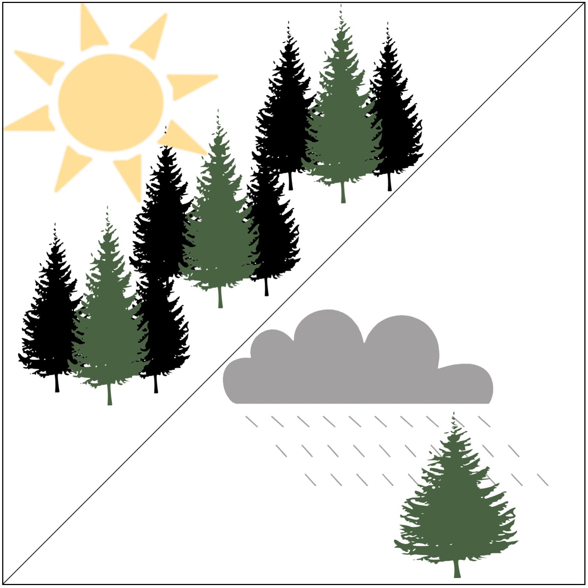
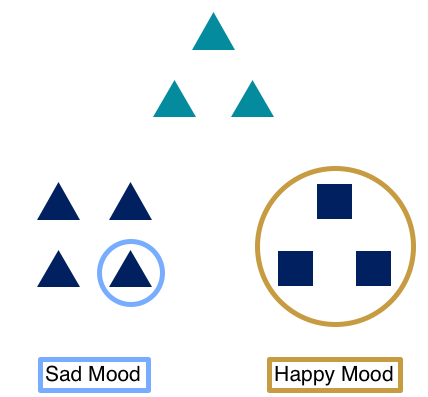
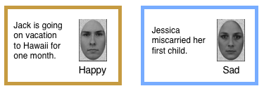
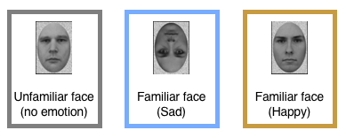
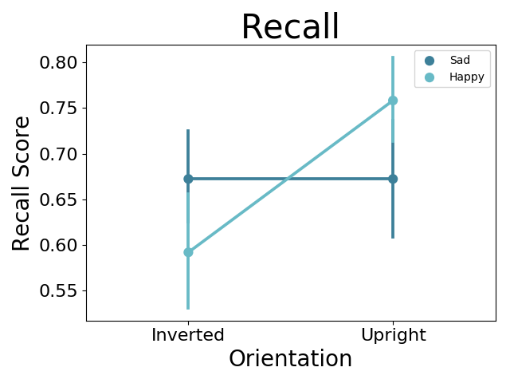
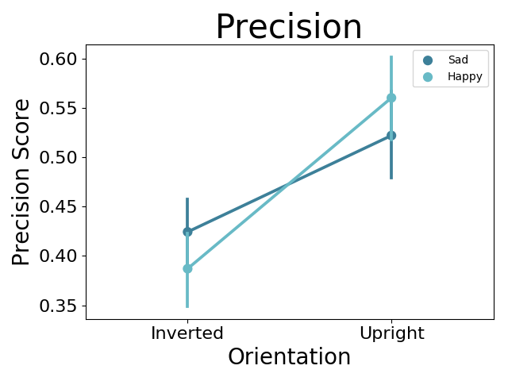
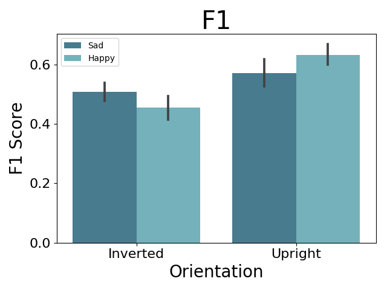

Emotion influences what we pay attention to and how we remember it
Think back to an old romantic relationship. Early on, you were probably wearing rose-colored glasses -- everything was great, he was the best, life was good. But after a few months of bliss, it all fell apart. Now, reflecting on that relationship. You really only remember how he snored and never filled up the Brita. You know, the major deal breakers.
What happened? if those red flags were there the whole time, why are they more apparent in retrospect? The context shifted. When you were initially in the relationship, you were happy and in love and focused on the positive outlook of the relationship. As things soured, you started focusing on the details, and those details were a major turn off.
Rose colored glasses can make it hard to notice that a red flag is actually red.
The forest is the trees. The trees are the forest.
It turns out there is a relationship between emotion and the types of information people pay attention to and remember. Positive emotions cause people to focus on the big picture, or, ‘see the forest instead of the trees’. Whereas negative emotion causes people to focus on the trees, without really noticing the forest.
Attention researchers have been studying how people focus on the big picture or on the features that make them up, using Navon figures. Each Navon figure looks like a big shape composed of multiple smaller shapes. The original version was made up of letters, but people have also used geometric shapes (Kimchi & Palmer). You can study this by giving a person a random cue that indicates if he should identify the small feature or the big shape as fast as possible.
For instance, one study showed that writing about either a positive or negative experience changed if people people focused on the the global or local level of the Navon figure (Gasper & Clore). This experimental design literally forced people to choose between the big picture and the details.

In this study, subjects were prompted to write about either a positive or negative personal experience. Then, they were shown a modified Navon shape, and asked to choose which (of two) other Navon shapes were more similar to the cue. One shape was similar on the local level (small triangles making up a large square). The other shape was similar on the global level (a large triangle made of little squares). People who wrote about positive experiences were more likely to choose based on global similarity, whereas people who wrote about a negative experience chose based on the local feature.
This suggests that mood influences what type of information we pay attention to.
What about memory?
These findings made me wonder how our current emotional state influences what we will later remember about an experience (and not only what we pay attention to). Do we remember the the big picture or the details?
Designing the experiment
Shifting this question to memory required changing a few key aspects of the experimental design.
First, I couldn't use Navon figures. As clever as they are, geometric shapes and letters are not memorable. Our mental representation of the letter E is abstracted to the point where it's hard to remember any specific letter E you've encountered. However, local vs. global details are prevalent in plenty of naturally-occurring stimuli. For instance, houses have both local features like the windows, door, building material, and these elements fit together to form the the overall shape and style of the house. For my experiment to work, I had to pick a particular experimental stimulus where subjects could study dozens of them (called trials) and remember them distinctly after a delay. I ended up opting for something we all extremely familiar with: faces.
Faces have both global and local information. I’m sure you can remember someone’s striking blue eyes or big crooked nose very vividly. Those individual features are local information. But, we also rely on the global configuration of all of the facial features. Where are someone's eyes, nose, and mouth in relation to each other? These features are always in the same configuration, even though the precise spacing varies across people. We process this global information fluidly and expertly. (I don’t know about you, but I’ve been honing this skill since I was a baby!).
Here's a demonstration of how important global information is to recognize faces. We can disrupt the global processing, simply by flipping the face upside down. Take a look at the right-side up and upside-down faces (Maurer, Le Grand, Mondloch). They are pictures of the same face, right? Click the button to see the upside-down face flipped.

Well, they are the same face, but the features have been re-arranged! That means you used the features to recognize the upside-down face -- you weren't able to process the configural information properly, so you just ignored it. I remember being shocked by this reveal the first time I saw it. This effect is called the "Thatcher effect", because the first experiment that manipulated faces in this way used an image of Margaret Thatcher (Peter Thompson).
The second experimental feature I changed was the mood induction. Faces are interesting, because we form strong associations for them. Think of anyone you've met only a handful of times. You might have some kind of narrative or anecdote that describes that person (like that guy you met at a party who told the story about meeting President Obama at an ice cream shop).
I took advantage of this natural tendency to form associations between people and narratives. Rather than having subjects write about their own past experience to alter their mood, I tailored positive and negative stories to be directly relevant to the faces they studied for the memory test. I wrote a bunch of happy and sad vignettes and had subjects read one before studying a face. In this way, a happy or sad story was uniquely associated with each face.

Emotion influences memory
Later, I tested subjects' memory of the faces. For the test, I showed them the faces they’d seen before mixed with an equal number of brand new faces. Subjects always studied the faces right-side up. However, at the test, they saw the face presented either right-side up or upside-down.

Although the sad/happy stories were only shown during the first viewing of the face, they strongly influenced whether participants focused on the global features or the details of the face. People remembered upright faces better when they were associated with a happy story, but they remembered upside-down faces better when the faces had been associated with a sad story. In this way, happy associations caused participants to remember global information, whereas sad associations caused participants to remember local information (Bridge, 2010).



Where does this study fall on the consciousness continuum?
In this task, subjects had to overtly make a behavioral response about whether they saw a face before or not. The main measure of memory I used was a conscious decision to click one of two buttons. However, the influence of emotion on how subjects processed the faces was entirely unconscious. Subjects were not aware that they attended to more “local” features of sad faces and more “global” features of happy faces. However, they likely viewed the faces differently when they studied them (unfortunately I did not have access to an eye tracker at the time of this experiment), which caused them to remember them differently on the final test.